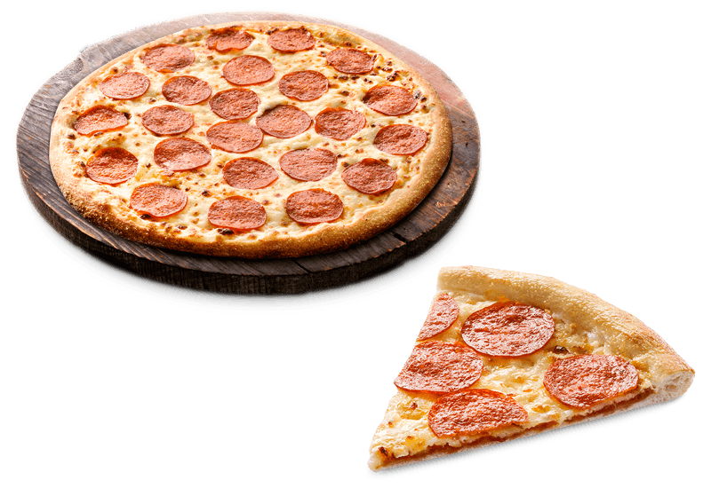

Een pizza is Italiaans eten. Het is een platte schijf van deeg met meestal tomatensaus en kaas.
Er worden vaak ook andere ingrediënten gebruikt, zoals salami, tonijn en olijven.
De pizza is bedacht in Napels.
Pizza Pepperoni, wie kent hem niet? Een grote fout die vaak gemaakt wordt met deze pizza, is dat hij hetzelfde zou zijn als de pizza salami.
Dit is echter niet het geval. Pepperoni is namelijk gemaakt door onder andere paprika en heeft een scherpere smaak dan salami.
Salami is dan ook geschikter om gewoon op brood te doen. Niet zo’n fan van de pittige pepperoni?
Dan staat het recept voor Pizza Salami ook online. Voor de echte Italianen, lees vooral het recept en maak de Pizza Pepperoni.
Om de pizza nog pittiger te maken, kun je er ook nog wat pepers opdoen.
